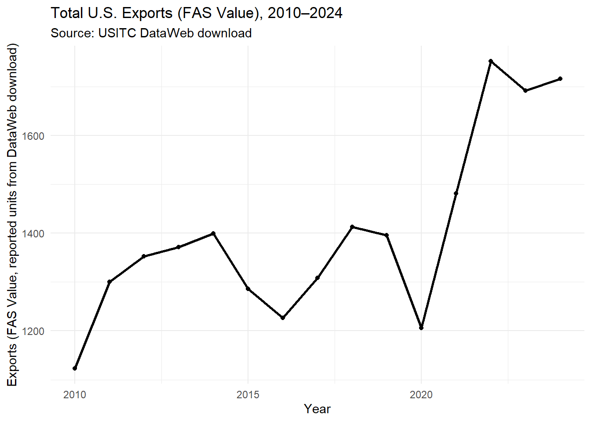
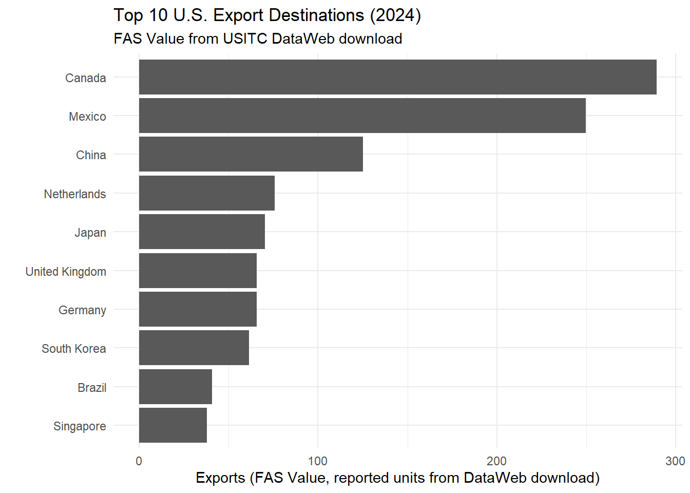

Code
library(readxl)
library(dplyr)
library(tidyr)
library(stringr)
library(ggplot2)This section uses two exports datasets downloaded from the U.S. International Trade Commission (USITC) DataWeb site:
Both spreadsheets are stored in this repo under data/ so the site can render the analysis reproducibly.
If your DataWeb download includes slightly different sheets/headers in the future, the cleaning steps below are written defensively (they search for the “2010…2024” year columns and build tidy data from them).
library(readxl)
library(dplyr)
library(tidyr)
library(stringr)
library(ggplot2)# File paths (relative to project root)
f_total <- "data/DataWeb-Query-Export_us_exports_total_2010_2024.xlsx"
f_country <- "data/DataWeb-Query-Export_us_exports_by_country_2010_2024.xlsx"
# Optional: list every sheet (helps satisfy the “look at all sheets” requirement)
excel_sheets(f_total)[1] "Query Parameters" "FAS Value" excel_sheets(f_country)[1] "Query Parameters" "FAS Value" # The “FAS Value” sheet is the main data table in both downloads.
# DataWeb often places the real header row a couple rows down.
raw_total <- read_excel(f_total, sheet = "FAS Value", col_names = FALSE)
# Find the header row by looking for the first row that contains a year like 2010
header_row_total <- which(apply(raw_total, 1, function(r) any(str_detect(as.character(r), "^2010$"))))[1]
header_row_total[1] 3# Build column names from that header row, then keep the data rows under it.
colnames_total <- str_trim(as.character(unlist(raw_total[header_row_total, ])))
colnames_total <- make.unique(colnames_total)
total_df <- raw_total[(header_row_total + 1):nrow(raw_total), ]
names(total_df) <- colnames_total
# IMPORTANT FIX:
# - Use POSIX whitespace class instead of "\s" to avoid R parse errors.
year_col_pattern <- "^[[:space:]]*[0-9]{4}[[:space:]]*$"
# Keep only the year columns and pivot longer
total_tidy <- total_df |>
select(matches(year_col_pattern)) |>
slice(1) |>
pivot_longer(
cols = everything(),
names_to = "Year",
values_to = "Exports"
) |>
mutate(
Year = as.integer(str_trim(Year)),
Exports = as.numeric(Exports)
) |>
arrange(Year)
glimpse(total_tidy)Rows: 15
Columns: 2
$ Year <int> 2010, 2011, 2012, 2013, 2014, 2015, 2016, 2017, 2018, 2019, 20…
$ Exports <dbl> 1122.57, 1300.12, 1352.21, 1371.13, 1398.85, 1286.17, 1226.93,…raw_country <- read_excel(f_country, sheet = "FAS Value", col_names = FALSE)
# Find the header row by looking for the first row that contains "Country"
header_row_country <- which(apply(raw_country, 1, function(r) any(str_detect(as.character(r), "^Country$"))))[1]
header_row_country[1] 3colnames_country <- str_trim(as.character(unlist(raw_country[header_row_country, ])))
colnames_country <- make.unique(colnames_country)
country_df <- raw_country[(header_row_country + 1):nrow(raw_country), ]
names(country_df) <- colnames_country
# Reuse the same year column pattern
year_col_pattern <- "^[[:space:]]*[0-9]{4}[[:space:]]*$"
country_tidy <- country_df |>
filter(!is.na(Country)) |>
select(Country, matches(year_col_pattern)) |>
pivot_longer(
cols = -Country,
names_to = "Year",
values_to = "Exports"
) |>
mutate(
Country = str_trim(as.character(Country)),
Year = as.integer(str_trim(Year)),
Exports = as.numeric(Exports)
) |>
filter(!is.na(Exports)) |>
arrange(Country, Year)
glimpse(country_tidy)Rows: 3,555
Columns: 3
$ Country <chr> "Afghanistan", "Afghanistan", "Afghanistan", "Afghanistan", "A…
$ Year <int> 2010, 2011, 2012, 2013, 2014, 2015, 2016, 2017, 2018, 2019, 20…
$ Exports <dbl> 2.03, 2.79, 1.34, 1.23, 0.67, 0.42, 0.89, 0.90, 1.17, 0.70, 0.…ggplot(total_tidy, aes(x = Year, y = Exports)) +
geom_line(linewidth = 1) +
geom_point(size = 1.5) +
labs(
title = "Total U.S. Exports (FAS Value), 2010–2024",
subtitle = "Source: USITC DataWeb download",
x = "Year",
y = "Exports (FAS Value, reported units from DataWeb download)"
) +
theme_minimal()
top_2024 <- country_tidy |>
filter(Year == 2024) |>
group_by(Country) |>
summarise(Exports = sum(Exports, na.rm = TRUE), .groups = "drop") |>
arrange(desc(Exports)) |>
slice_head(n = 10)
top_2024# A tibble: 10 × 2
Country Exports
<chr> <dbl>
1 Canada 289.
2 Mexico 250.
3 China 125.
4 Netherlands 75.7
5 Japan 70.3
6 United Kingdom 65.9
7 Germany 65.7
8 South Korea 61.6
9 Brazil 40.8
10 Singapore 37.9ggplot(top_2024, aes(x = reorder(Country, Exports), y = Exports)) +
geom_col() +
coord_flip() +
labs(
title = "Top 10 U.S. Export Destinations (2024)",
subtitle = "FAS Value from USITC DataWeb download",
x = "",
y = "Exports (FAS Value, reported units from DataWeb download)"
) +
theme_minimal()